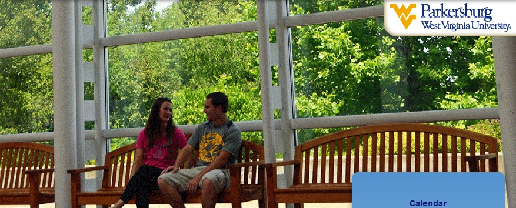

| Home | About | Academics | Current Students | Future Students | High School Students | Faculty & Staff | Alumni & Giving | Workforce & Community | Search |
|---|

Calendar
Board of Governors to meet Oct. 8
West Virginia University at Parkersburg Board of Governors will meet Wednesday, Oct. 8. The meeting will take place at 3:15 p.m. in room 2209.
View the complete agenda:
WVU Parkersburg receives grant to promote diversity and equality
West Virginia University at Parkersburg has been awarded an $8,870 Diversity for Equity grant to fund programs that increase cultural diversity on campus and promote equal access to higher education opportunities.
WVU Parkersburgs grant funds will be used to fund three distinct initiatives: a guest speaker in observance of National Disability...
New career services portal to benefit employers, students, alumni
West Virginia University at Parkersburg is offering new and improved services to help students and alumni find jobs and assist employers in recruiting efforts. Recently, WVU Parkersburg launched College Central Network (CCN), a career services portal. Through the site, students and alumni can search listings, post a resume, apply for...